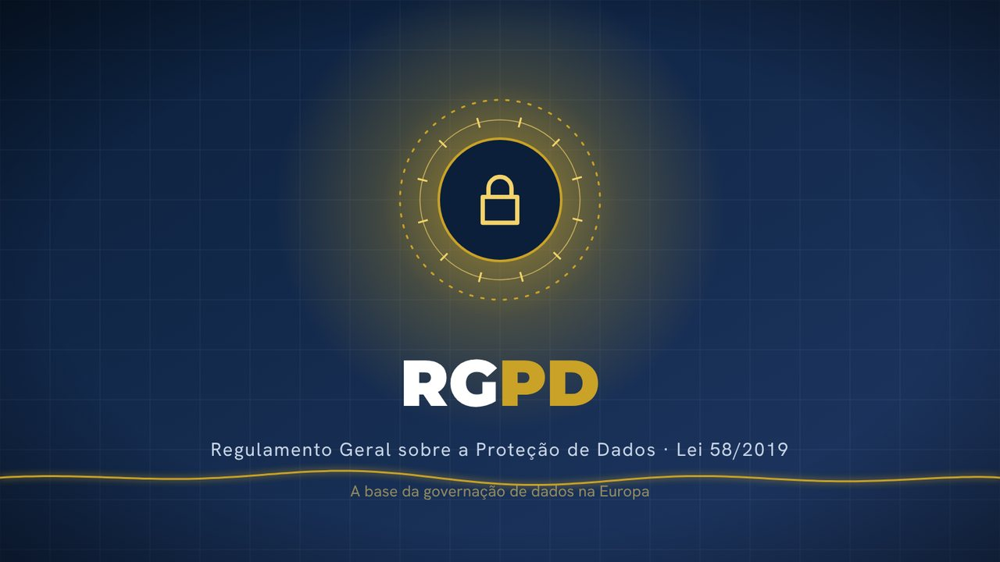

ARG
ARGARGOS › As normas em 4 minutos › RGPD
RGPD em 4 minutos: O que mais se sanciona é o essencial
O RGPD é a base de toda a governação de dados na Europa. Declarar que se cumpre não chega. É preciso poder prová-lo. O que mais se sanciona é o essencial.

- 0:00Pequenos erros
- 0:12As coimas
- 0:28O que se sanciona
- 0:45RGPD
- 0:53O que exige
- 1:15Omnibus digital
- 1:36Datas
- 1:57A cadeia
- 2:13Em Portugal
- 2:30O que fazer
Dados-chave
- 20 M€ ou 4 % do volume de negócios mundial
- 25.5.2018 o RGPD aplica-se
- 1.1.2026 regulamento processual (UE) 2025/2518 em vigor
- 2.4.2027 aplica-se aos novos casos transfronteiriços
- Final de 2027 simplificação concluída
- Sem fundamento Tratamentos sem base clara
- Registo irreal Não reflete a realidade
- Conservação Dados guardados tempo demais
Transcrição
Texto completo da locução
0:00 · Pequenos erros
Um e-mail para o destinatário errado. Uma cópia de segurança que ninguém apagou. Dados fora da Europa. Aparentemente inofensivo. Até chegar a queixa.
0:12 · As coimas
O RGPD aplica-se desde 2018, com coimas até vinte milhões de euros ou quatro por cento do volume de negócios mundial. Em Portugal, é completado pela Lei 58 de 2019. E quem fiscaliza é a CNPD.
0:28 · O que se sanciona
O que mais se sanciona é o essencial. Tratamentos sem fundamento jurídico claro. Um registo que não reflete a realidade. Dados guardados tempo demais. Subcontratantes sem controlo. E segurança que só existe no papel.
0:45 · RGPD
O RGPD é a base de toda a governação de dados na Europa. Declarar que se cumpre não chega. É preciso poder prová-lo.
0:53 · O que exige
O que exige hoje. Fundamento jurídico e transparência em cada tratamento. Um registo e, se o risco for elevado, uma avaliação de impacto. Privacidade desde a conceção, e um contrato com cada subcontratante. E notificar as violações em 72 horas. As transferências fora do EEE, sempre com garantias.
1:15 · Omnibus digital
E o que vem aí: o Omnibus digital, ainda em negociação. Tocaria no conceito de dado pessoal, mas o Conselho trava. Reconheceria o interesse legítimo para a IA. E só as violações de risco elevado seriam notificadas, em 96 horas. Mas não é lei: hoje cumpre-se o RGPD tal como está.
1:36 · Datas
As datas-chave. 25 de maio de 2018: o RGPD aplica-se. 1 de janeiro de 2026: entra em vigor o novo regulamento processual. 2 de abril de 2027: aplica-se aos novos casos transfronteiriços. E final de 2027: a simplificação concluída.
1:57 · A cadeia
Cada elo tem o seu papel. O fabricante: privacidade desde a conceção. O grossista: contratos de suporte. O integrador: medidas e subcontratantes. E o cliente final: fundamentos, registo e avaliações de impacto.
2:13 · Em Portugal
Em Portugal fiscaliza a Comissão Nacional de Proteção de Dados. A Lei 58 de 2019 adapta o RGPD ao direito português. A CNPD acompanha também a inteligência artificial. E no Data Act continua competente para os dados pessoais.
2:30 · O que fazer
O que fazer agora. Cumprir o RGPD atual, controlar as violações de dados e proteger o treino da IA. O ARGOS prova-o, em vez de o declarar: um registo real, avaliações de impacto e uma prova por medida. RGPD: cumprir é poder prová-lo.
Perguntas frequentes
O que é RGPD?
O RGPD é a base de toda a governação de dados na Europa. Declarar que se cumpre não chega. É preciso poder prová-lo. O RGPD aplica-se desde 2018, com coimas até vinte milhões de euros ou quatro por cento do volume de negócios mundial. Em Portugal, é completado pela Lei 58 de 2019. E quem fiscaliza é a CNPD.
O que exige RGPD?
O que exige hoje. Fundamento jurídico e transparência em cada tratamento. Um registo e, se o risco for elevado, uma avaliação de impacto. Privacidade desde a conceção, e um contrato com cada subcontratante. E notificar as violações em 72 horas. As transferências fora do EEE, sempre com garantias.
Quais são as datas-chave?
As datas-chave. 25 de maio de 2018: o RGPD aplica-se. 1 de janeiro de 2026: entra em vigor o novo regulamento processual. 2 de abril de 2027: aplica-se aos novos casos transfronteiriços. E final de 2027: a simplificação concluída.
Qual é a situação em Portugal?
O que mais se sanciona é o essencial. Tratamentos sem fundamento jurídico claro. Um registo que não reflete a realidade. Dados guardados tempo demais. Subcontratantes sem controlo. E segurança que só existe no papel. Em Portugal fiscaliza a Comissão Nacional de Proteção de Dados. A Lei 58 de 2019 adapta o RGPD ao direito português. A CNPD acompanha também a inteligência artificial. E no Data Act continua competente para os dados pessoais.
O que deve fazer uma empresa já?
O que fazer agora. Cumprir o RGPD atual, controlar as violações de dados e proteger o treino da IA. O ARGOS prova-o, em vez de o declarar: um registo real, avaliações de impacto e uma prova por medida. RGPD: cumprir é poder prová-lo.
Fontes oficiais
Continue com
 EHDS
EHDSEHDS em 4 minutos: Para hospitais e fabricantes
 Regulamento da IA
Regulamento da IARegulamento da IA em 4 minutos: Portugal: aplicação direta, lei pendente
 NIS2
NIS2NIS2 em 4 minutos: Portugal: a NIS2 já é lei
Locução e música geradas com inteligência artificial (art. 50 do Regulamento da IA). Informação geral, não constitui aconselhamento jurídico; situação a novembro de 2026, segundo as fichas de regulamentação da Software in a Box. Clipes de vídeo com licença Envato.
Para incorporar esta apresentação noutro site: <iframe src="https://argos.softwareinabox.eu/pt/normas/rgpd/presentacion/?embed=1" width="960" height="540" allow="autoplay; fullscreen" title="RGPD em 4 minutos: O que mais se sanciona é o essencial"></iframe> com uma ligação para esta página.
Disponível também em: EspañolDeutschFrançaisFrançais (Belgique)ItalianoNederlandsNederlands (België)Dansk